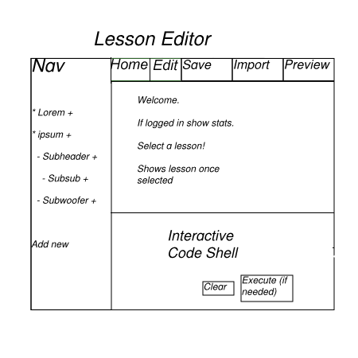

After the user logs in, they are taken to the screen shown below in Figure 1.

Figure 1: Initial screen.
Home:
The Home button will take you to some instructions to pick a class and lesson.
The navigation bar on the left will show all classes and lessons the user has
subscribed to.
Edit(only available for instructor):
The Edit button is visible only for instructors. When navigating lessons
they will have the option of clicking the "Edit" button to edit the contents of
the lesson. See the "Editing Lessons" section for more details.
Save(only available for instructor):
The Save button is visible only for instructors. When editing a lesson,
an instructor is able to save their edits by clicking the Save button.
Import(ony available for instructor):
The Import button is visible only for instructors. When editing a lesson,
an instructor is able to import data into their lessons by clicking the
Import button. See "Importing data into Lessons" for more details.
The Nav Bar:
The Nav Bar contains all lessons that the user is subscribed to or owns. A
user can navigate through the lessons by clicking the symbol to the left of
the topic to expand and view sub-lessons. To collapse the lesson the symbol
to the left is clicked again. To view a lesson, the user will click
on the name of the topic he or she wishes to see.
The Nav Bar(instructors):
In addition to the content above, instructors are able to add new sub-
lessons by clicking the "+" sign to the right of a lesson. This will add
a new lesson to the end of the sub-lessons in that section. They will aslo
have the ability to add a class by clicking hte Add new button on the bottom
of the Nav Bar. See "Creating Lessons" for more details.
Interactive Code Shell:
The Interactive Code Shell is where example code for each lesson is ran.
When not viewing a lesson, the Code Shell is initially empty. The user has the
option to add code and run it. Once a lesson is selected, this area will be
populated with example code for that lesson.